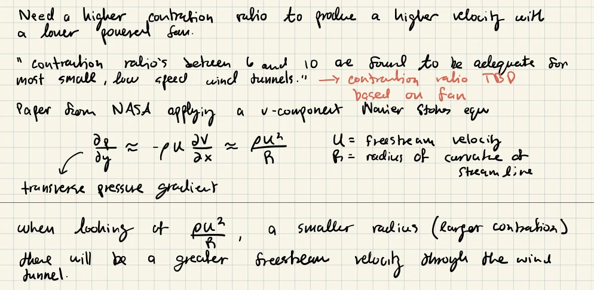

September 7 · Project objective
I wanted a mechanical and aerospace project that combined design, manufacturing, and experimental aerodynamics. I’ve long been interested in measuring lift and drag on flying discs. Limited access to the university’s wind tunnel led me to design my own, with enough flow uniformity to support repeatable measurements and room to test airfoils and small models.
September 12 · Concept layout
I set aside space in a Quonset hut and sketched a 32-ft open-return tunnel. The concept puts the flow-conditioning hardware and contraction upstream of the test section, with the diffuser and fan downstream.

- Contraction. A honeycomb and filters condition the incoming flow at the cost of added pressure loss. I’m using a 9:1 area ratio as the starting point and evaluating ratios up to 12:1 alongside the fan operating point.
- Test section. The 6-ft section is designed to be rigid and sealed to limit vibration and leakage at the 100 mph target. The concept includes a fiberglass viewing panel for observing the test article.
- Diffuser. The 15-ft diffuser increases cross-sectional area to reduce air velocity and recover static pressure. I’m considering HVAC-style isolation and damping as a lower-cost way to limit vibration and noise from the downstream fan.
Analysis and status
I modeled the components in SolidWorks and ran internal-flow CFD in Ansys. Fan sizing and material selection are still in progress. The target speed and contraction ratio are design inputs pending validation.

Appendix and references
- Contraction Design for Small Low-Speed Wind Tunnels (NASA PDF). I used this report to understand how contraction geometry affects the flow entering the test section.
- UC Davis aeronautical wind tunnel specifications and schematics. This facility informed the concept layout and dimensions.